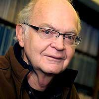

Donald Ervin Knuth was born January 10, 1938, he is a renowned computer scientist and professor emeritus at Stanford University. Knuth is best known as the author of the multi-volume The Art of Computer Programming , one of the most highly respected references in the computer science field.
In addition to fundamental contributions in several branches of theoretical computer science, Donald Knuth is the creator of the TeX computer typesetting system, the related METAFONT font definition language and rendering system, and the Computer Modern family of typefaces.
As a member of the academic and scientific community, Knuth is strongly opposed to the policy of granting software patents for trivial solutions that should be obvious, but has expressed more nuanced views for nontrivial solutions such as the interior-point method of linear programming.
Knuth's lifelong love affair with computers began as an undergraduate when he discovered the IBM 650 computer system at Case. He quickly mastered the inner workings of the machine and developed a novel program to automate coaching of the school's basketball team.
After receiving his PhD, Knuth joined Caltech's faculty as an assistant professor.
He accepted a commission to write a book on computer programming language compilers. While working on this project, Knuth decided that he could not adequately treat the topic without first developing a fundamental theory of computer programming, which became The Art of Computer Programming.
In 1976, Knuth invented the typesetting language TeX when he grew frustrated with the poor quality of typography proposed for an upcoming new volume of The Art of Computer Programming.
Knuth has won dozens of awards, including the ACM Turing Award, the National Medal of Science, and the Kyoto Prize.
"Beware of the bugs in the above code; I have only proved it correct, not tried it."
"I can’t be as confident about computer science as I can about biology. Biology easily has 500 years of exciting problems to work on. It’s at that level."
"The psychological profiling [of a programmer] is mostly the ability to shift levels of abstraction, from low level to high level. To see something in the small and to see something in the large"